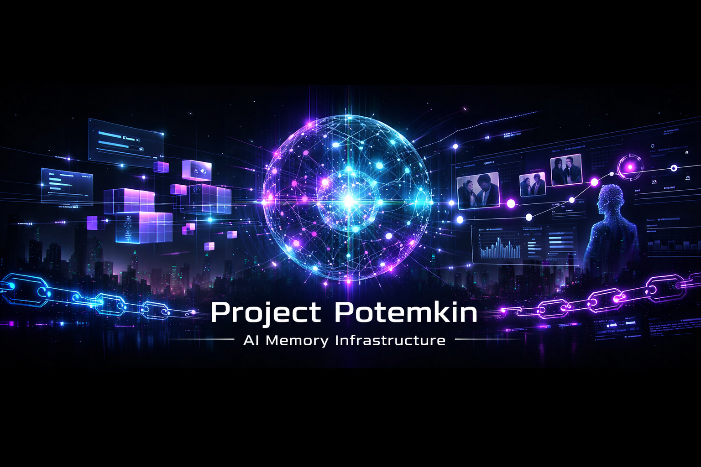
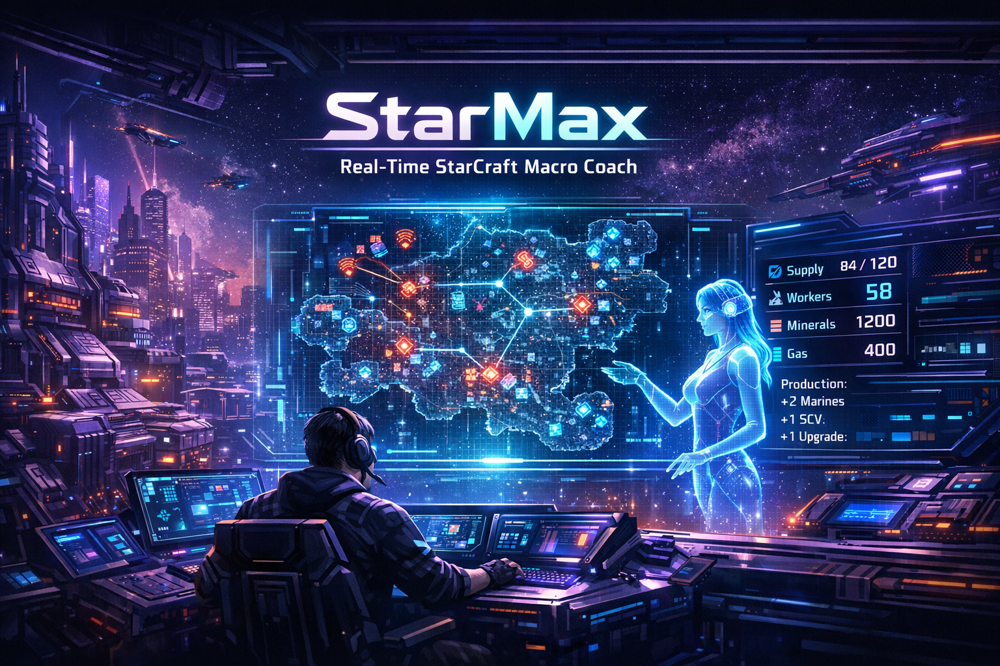

Project Potemkin
AI Agent & Memory Systems
An AI companion system with persistent memory and autonomous behavior, exploring long-term human-AI interaction and intelligent agents that evolve over time.

Hi everyone, welcome to my website. Here you can check out projects of all sizes, from AI to autonomous systems, plus some small websites I build just for fun. By the way, I'm Max, an Artificial Intelligence student at King's College London. Most of the time I turn ideas in my head into projects big and small, and make weird but fun experiments. I believe the best way to learn is build first, understand later.
Short version on the homepage. Click any project to see the full details.
AI Agent & Memory Systems
An AI companion system with persistent memory and autonomous behavior, exploring long-term human-AI interaction and intelligent agents that evolve over time.

SC2 Macro Coach / Human-AI Collaboration
A human-AI collaborative macro coaching system for StarCraft II, focused on interpretable state abstractions and actionable suggestions.

Emergency Navigation AI
An emergency navigation app that helps users choose the fastest suitable A&E by combining urgency, insurance access, travel time, and expected waits.
Small fun experiments and quirky tools built for testing ideas.
Cocktail Test Lab
A playful testing program for customizing cocktails by mood and taste preferences.
Currently used for idea testing and recipe prototyping.
Cyber Fortune Teller
A fun cyber divination app that generates themed fortunes and playful personality readings.
Built as an entertainment-only experiment.
If you'd like to discuss projects, writing, or collaboration, email me at yangyz23km@outlook.com.